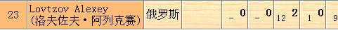
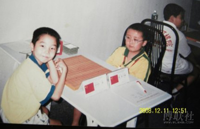

妖刀开局的历史（较权威版本）
#1 <font color="red">妖刀开局的历史（较权威版本）</font>作者：莲子 发表时间：2006-1-27 13:07:50
北京一个民间高手最先走出了这个开局，这个棋手叫付强。妖刀开局最早出现在96年北京市“民族团结”杯五子棋比赛中，当时并没有引起大家的重视，当时黑3走的是I5，所以大家给这个开局起名叫妖刀，在97年“民族团结”杯时再次出现时，还是没有提起大家对这个开局的兴趣，当时黑3走的是K8，K9两个点，当时大家笑谈说经过一年了，付强的这个妖刀也变化了，大家为了保险，于是提议先看看黑3走H11，I11的变化，没想到一研究发现这个开局的前几手攻势凌厉，这样这个开局就引起了大家的注意，大家开始意识到这个开局也许不象大家想的那样是必败的，于是北京一批专业棋手开始研究，参与研究的人员有张进宇、于京平、李栋、崔悦等，当时的研究结果认为是黑棋稍好的开局，之后由任少年队教练的于京平把这个开局教给了少年队选手。在98年世界青少年赛时，这个开局成了中国选手的秘密武器，一直被雪藏，直到比赛临近结束时，中国一名8级选手在遭遇一名欧洲四段选手时使用了这个开局，对手没有交换，结果是黑棋速胜，这名欧洲选手是那次比赛的夺冠热门，这盘棋将直接影响他的夺冠，他在输了后提出这个开局不属于职业开局，要求判对手负，裁判没有予以理会，再向裁判长提出，当时的裁判长姚建京认为如果在对手走出开局后立刻提出还可以考虑，但在输了后再提出显然是无理的，于是维持原判，之后由世界冠军ANDO提出仲裁，仲裁时ANDO坚持认为这个开局在比赛中使用是不行的，日本方面没有表态，中国方面那威出面，他说要给外国选手一个面子，同意了ANDO的看法，要求裁判长改判中国选手负，裁判长坚持原判，经调停，最后判双方和棋，而之后ANDO直接向国际连珠联盟提出禁止使用这个开局，于是就有了“比赛中禁止使用26种开局以外的开局”这个规则，这个开局在国际大赛中初露头角即被封杀了。
之后在国内的所有大赛中，也都使用了这个规则，在比赛中如果使用了这个开局，对手立刻提出，判开局方违例一次（一盘棋中两次违例判负）并重新开局，但如果对手没有立刻提出，在以后再提出时不做判罚。可以说这个开局是因为ANDO的一念之私而被封杀了，北京选手也就放弃了对这个开局的继续研究。前两年在网络上开始有人使用这个并取得了不错的成绩，南方棋手又对这个开局做了一些研究，并整理了出来，但也只能局限在网络中使用，所以虽然有很多人输给了这个开局，但由于现实比赛是被禁止的，所以很多高手根本不去研究这个开局的。
［ 掌棋宣传员 于 2010-8-7 23:31:20 时花20金币送鲜花一朵］
#2 Re:妖刀开局的历史作者：笑雨辰 发表时间：2008-12-31 7:17:52
原来还这么多事情啊#3 Re:妖刀开局的历史作者：walker 发表时间：2008-12-31 15:43:51
噢，原来是这样。
#4 Re:妖刀开局的历史作者：失落刀 发表时间：2009-1-5 23:13:14
在98年世界青少年赛时，这个开局成了中国选手的秘密武器，一直被雪藏，直到比赛临近结束时，中国一名8级选手在遭遇一名欧洲四段选手时使用了这个开局，
据勵精说：“中国一名8级选手就是小沈可嘉，只有7岁，是老于（于京平执教）授意的。 ”
#5 Re:妖刀开局的历史作者：失落刀 发表时间：2009-1-5 23:22:41

勵精(82924089) 23:15:17
http://www.ljrenju.com.cn/news/ywc2/ywc2.htm
勵精(82924089) 23:19:59
沈可嘉最后一轮对孙羽浩，我有印象
倒二对的是冈部宽
倒三轮空
倒四负于23号，那是妖刀胜了，最后判负的。
勵精(82924089) 23:20:56
他没有对过谢尔盖
勵精(82924089) 23:21:20
对过的另一位是荷曼森二段。
#6 Re:妖刀开局的历史作者：失落刀 发表时间：2009-1-5 23:39:47
勵精(82924089) 23:32:12
在此之前，所谓RIF的规则是照搬翻译日规的，对开局定义是“假先手指定开局”，98世青赛妖刀事件之后，RIF规则才改成现在的“假先手指定26种开局之一”
****(463148561) 23:32:37
在此之前，所谓RIF的规则是照搬翻译日规的，对开局定义是“假先手指定开局”
这个时候就是说不限制开局必须26？
****(463148561) 23:33:49
但限制黑1必须H8？白2必须紧挨黑1对吗？
勵精(82924089) 23:34:09
当时，他们没认为26之外还有可用点，26就是他们认为的最大值了，所以没有限定。
****(463148561) 23:35:01
可是以前日本不是也有大桂间开局比赛棋谱的嘛
勵精(82924089) 23:37:11
黑子先行、天元开局是五子棋长期发展形成的约定俗成潜规则。
勵精(82924089) 23:37:49
白2直止或斜止也是最强的，白2与黑1成日形必败
#7 Re:妖刀开局的历史作者：失落刀 发表时间：2009-1-5 23:41:07
勵精(82924089) 23:38:391998年在北京举办的第二届世青赛上，北京小棋手钻了国际规则(日规)的一个空子，突然祭出一把怪怪的妖刀开局并取得胜利，让欧洲棋手大吃一惊，他们没见过！从那时起，国际规则中原来的“三手指定开局”更改为“三手指定26种开局之一”。但向来奉日本规则为蓝本的欧洲棋手们心里也有所醒悟，原来日本规则也不是完全不能更改的。
#8 Re:妖刀开局的历史作者：失落刀 发表时间：2009-1-5 23:48:30

这是98世青赛的照片
回头的是孙羽浩，正坐的是山西的翟琨，他背后的就是沈可嘉
#9 Re:妖刀开局的历史作者：失落刀 发表时间：2009-1-5 23:58:50
勵精(82924089) 23:54:15有文介绍说当时是判沈负的，也有说是判和的，我印象是最后判对局无效，二人重赛，重赛对局小沈负。
勵精(82924089) 23:55:05
因当时我就在比赛大厅外！
#10 Re:妖刀开局的历史作者：失落刀 发表时间：2009-1-6 0:02:14
勵精(82924089) 23:59:51那老师说可以判负，裁判长不同意，安度不是比赛官员，当时的仲裁委员会主任是日本的达富弘之，委员有彭建国。裁判长好像是姚建京，于京平是中国队总教练。
****(463148561) 0:00:32
裁判长意见是？
勵精(82924089) 0:01:07
裁判长坚持不能判负。
勵精(82924089) 0:01:41
当时的仲裁委员会主任是日本的达富弘之，但达富投弃权票，这家伙不表态。
#11 Re:妖刀开局的历史作者：失落刀 发表时间：2009-1-6 0:04:17
乔东兵(48253454) 0:02:00记得我当年去比赛，编排就是姚建京
乔东兵(48253454) 0:02:33
后来好像第一届全国邀请赛还有姚建京
勵精(82924089) 0:02:42
姚建京是编排，但是不是裁判长我就不记得了。
#12 Re:妖刀开局的历史作者：失落刀 发表时间：2009-1-6 0:07:14
根据回忆，尽量还原历史，若有错漏，欢迎指出。#13 Re:妖刀开局的历史作者：无尽 发表时间：2009-1-6 9:43:46
口述史学
#14 Re:妖刀开局的历史作者：星雨 发表时间：2009-1-30 22:36:02
失落刀真牛
#15 Re:妖刀开局的历史作者：山寨手机 发表时间：2009-2-23 13:44:12
呵呵，长知识了，谢谢。#16 Re:妖刀开局的历史作者：儒释道 发表时间：2009-11-30 12:46:07
还是中国人聪明
#17 Re:妖刀开局的历史作者：许相公 发表时间：2009-12-2 12:27:20
96年就有妖刀？那时兄弟我还在花月中遨游呢#18 Re:妖刀开局的历史作者：地下勇士 发表时间：2009-12-16 17:34:35
怎么就封了？好歹也是奇葩一朵！#19 Re:妖刀开局的历史作者：26 发表时间：2009-12-19 22:19:55
看到一个棋友对"为什么比赛不允许开妖刀？"的回复很精彩，特予以转载：
如果我把这个原因解释为五子棋手头脑简单,只会死记硬背现成结论,缺乏对未知局面的思考能力的话,你们看了会很不满.
可不这么解释又该如何解释?
假如有人提议把围棋比赛的开局限制为错小目,三连星,中国流等几种常见开局之一的话,大家肯定会觉得他不是弱智就是神经病.
#20 Re:Re:妖刀开局的历史作者：星月族 发表时间：2009-12-28 14:22:18
引用：楼上一竿子打了一大片，不应该对中国棋手说这些，在这个事件中我们是受害方，受影响的是中国五子棋及至世界五子棋的发展，受益的是西方的棋手，这种靠打压中国来维护其既得利益的作法是西方人的惯用伎俩
原文由 26 发表于 2009-12-19 22:19:55 :看到一个棋友对"为什么比赛不允许开妖刀？"的回复很精彩，特予以转载：
如果我把这个原因解释为五子棋手头脑简单,只会死记硬背现成结论,缺乏对未知局面的思考能力的话,你们看了会很不满.
可不这么解释又该如何解释?
假如有人提议把围棋比赛的开局限制为错小目,三连星,中国流等几种常见开局之一的话,大家肯定会觉得他不是弱智就是神经病.
#21 Re:Re:妖刀开局的历史作者：孤竹 发表时间：2009-12-28 16:27:16
引用：所谓的“妖刀”开局，在日本连珠史上称为“大桂间”开局，早就出现了，不仅仅是在96年。
原文由 许相公 发表于 2009-12-2 12:27:20 :
96年就有妖刀？那时兄弟我还在花月中遨游呢
［ 失落刀 于 2009-12-28 23:44:26 时花20金币送鲜花一朵］
#22 Re:妖刀开局的历史（较权威版本）作者：失落刀 发表时间：2010-8-7 13:26:01
#23 Re:妖刀开局的历史（较权威版本）作者：日月丽天 发表时间：2010-8-8 13:54:44
原来如此，妖刀一上来比赛就夭折了。
早知道开始就有意准备输，输了，对方就粘粘之喜，但允许妖刀开局在比赛中就可以保留下来了，
#24 Re:妖刀开局的历史（较权威版本）作者：日月丽天 发表时间：2010-8-8 13:54:47
原来如此，妖刀一上来比赛就夭折了。
早知道开始就有意准备输，输了，对方就粘粘之喜，但允许妖刀开局在比赛中就可以保留下来了，
#25 Re:妖刀开局的历史（较权威版本）作者：第五象限 发表时间：2010-9-28 16:59:45
感觉有妖刀没什么大不了的 反而会增加一些研究吧 只要有交换规则就能保证平衡